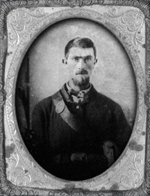

|

NAME: Thomas Allen Ware
BORN: 1829
DIED: 1907
ALLEGIANCE: Union
HIGHEST RANK: 3rd Sergeant
UNIT: 27th Ohio National Guard and 149th Ohio Volunteer
Infantry, Company C.
RECORD: Joined in July 1863, Company C of 27th
Ohio National Guard Regiment, consolidated with 55th Ohio
National Guard Battalion into 149th Ohio Volunteer Infantry
in May 1864. Garrison duty in Annapolis, Md.; reported
missing in action July 9 at Monocacy. Rejoined in late July;
mustered out.
|
|
In early May 1864, 34-year-old Thomas Allen Ware left his wife and
three small children, harness shop and home in the village
of Frankfort, Ohio. He was responding to the call of his
governor and President Abraham Lincoln for 100 days of
Federal service. Their purpose was to use these men to
relieve veteran units from guard duty and make the latter
available to General Ulysses S. Grant and Major General
William T. Sherman to help win the war in the summer of
1864.
Ware joined Company C of the 27th Ohio National Guard
Regiment, which with the 55th Ohio National Guard Battalion
became the 149th Ohio Volunteer Infantry, commanded by
Colonel Allison Brown. The 149th joined other Ohio units in
and around Baltimore and Annapolis, as part of Maj. Gen. Lew
Wallace's VIII Corps.
In early July 1864, Confederate Lt. Gen. Jubal Early
crossed the Potomac River to threaten Washington and
Baltimore. General Wallace deployed his outnumbered ad hoc
force behind the Monocacy River to cover the three bridges
near Monocacy Junction. He aligned the bulk of his forces to
cover the two bridges on his left. Colonel Brown was
reinforced by three companies of the 149th Ohio and at
critical times by 100 mounted infantrymen of the 159th Ohio
Volunteer Infantry. He was charged with covering the Stone,
or Jug, Bridge, which carried the Baltimore Pike.
On the evening of July 8, Company C, commanded by Captain
Charles McGinnis, was deployed one mile upstream to cover
Hughes' Ford, where Ware and his cohorts spent a lonely
night. At 6 a.m. the next day, Early deployed Brig. Gen.
Robert D. Lilley's Brigade astride the Baltimore Pike, and
his sharpshooters sniped at and probed the Ohioans. For the
next 12 hours, the 149th faced a much larger enemy.
Close to 10 a.m., Maj. Gen. Robert E. Rodes' Division
replaced Lilley and deployed its excellent sharpshooter
battalion. About the same time, Confederate cavalry tried to
force a crossing at Hughes' Ford. Supported by Company E and
the mounted infantry, Company C repulsed the Rebels.
The main battle was fought on the left. Wallace retreated
behind the cover of the 149th to take the Baltimore Pike. He
ordered Colonel Brown to hold the Stone Bridge "to the last
extremity." If pressed too hard, the Ohioans were "to
disperse and take care of themselves."
For the last hour of the battle, Colonel Brown and his
men fought alone. Company C, its line of retreat cut,
scattered in all directions. Almost every man was missing in
action. Eventually, most reported back to their unit. The
149th mustered out on August 20, 1864, short 103 men; they
had served 121 days.
Ware received $3.25 for clothing lost at Monocacy. His
son, Corey Jacob, 4 years old when his father returned,
never forgot the moment when his dad opened their gate and
came home. Ware resumed his harness and saddle work. He was
Mason, a Methodist and a widely respected member of his
community. He died at age 78 and was buried July 9, 1907, 43
years after the Battle of Monocacy, better known the battle
that saved Washington, D.C.
Source: Civil War Times Illustrated
45:2 (March/April 2006), 10.
|